核验日期：2026-07-02 官网快照：2026-07-02T07:46:02.019456+00:00
| 类型 | 数量 | 型号 |
|---|---|---|
| 纯轮式移动机器人 | 4 | TurtleBot 2 / Kobuki、LoCoBot、Clearpath Husky、Fetch Robotics Freight |
| 固定机械臂 | 4 | Franka Research 3、Trossen ViperX 300 6DOF、A1、Franka Research 3 mounted cart |
| 轮式机械臂机器人 | 5 | Fetch、PAL Robotics TIAGo (dual-arm configuration)、Hello Robot Stretch、Galaxea R1、Galaxea R1 Pro |
| VR 双臂代理 | 1 | BehaviorRobot |
排名主指标为“贡献者—论文—型号”记录数；贡献者数和论文数用于辅助判断。以下均取前 5 名， 当前证据不足 5 个型号时只列已有型号。
BEHAVIOR 官网明确列出了以下 4 种纯轮式移动机器人：
| 官网型号 | 图片 | 厂商 | 机械臂状态 | 官网证据 |
|---|---|---|---|---|
| TurtleBot 2 / Kobuki | 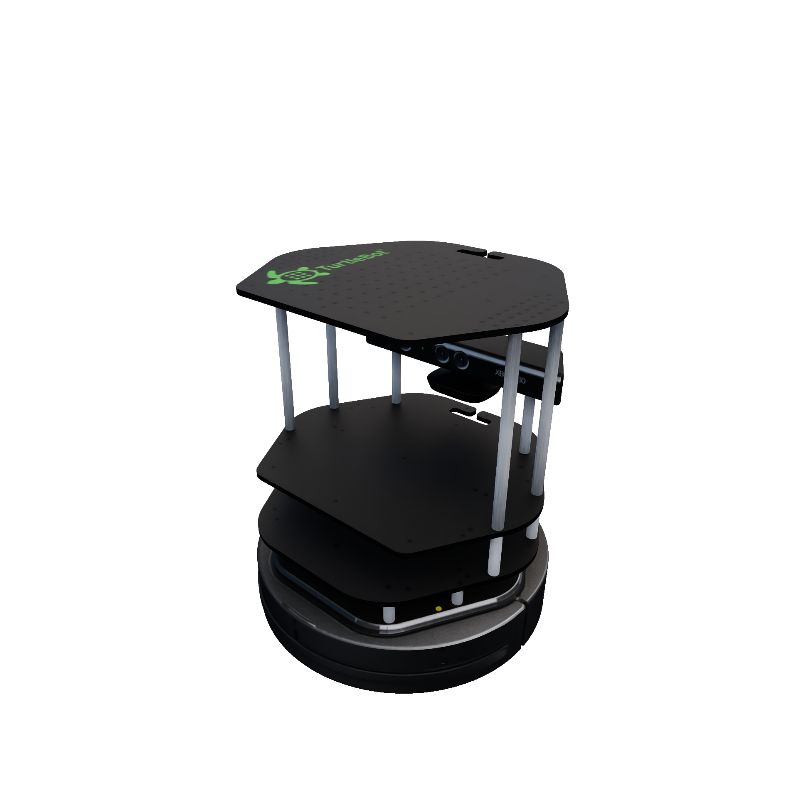 |
Yujin Robot / Open Robotics | https://behavior.stanford.edu/omnigibson/robots.html | |
| LoCoBot | 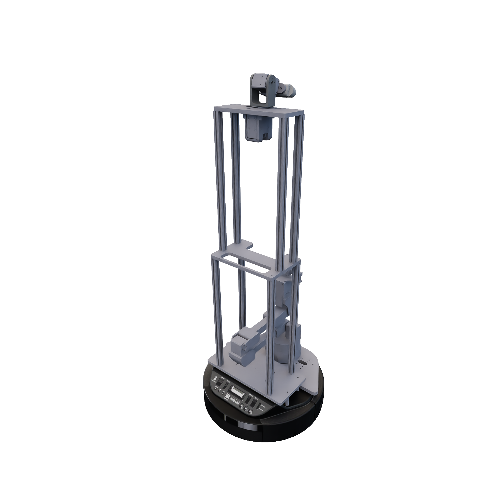 |
Trossen Robotics / Interbotix | LoCoBot arm (disabled) | https://behavior.stanford.edu/omnigibson/robots.html |
| Clearpath Husky | 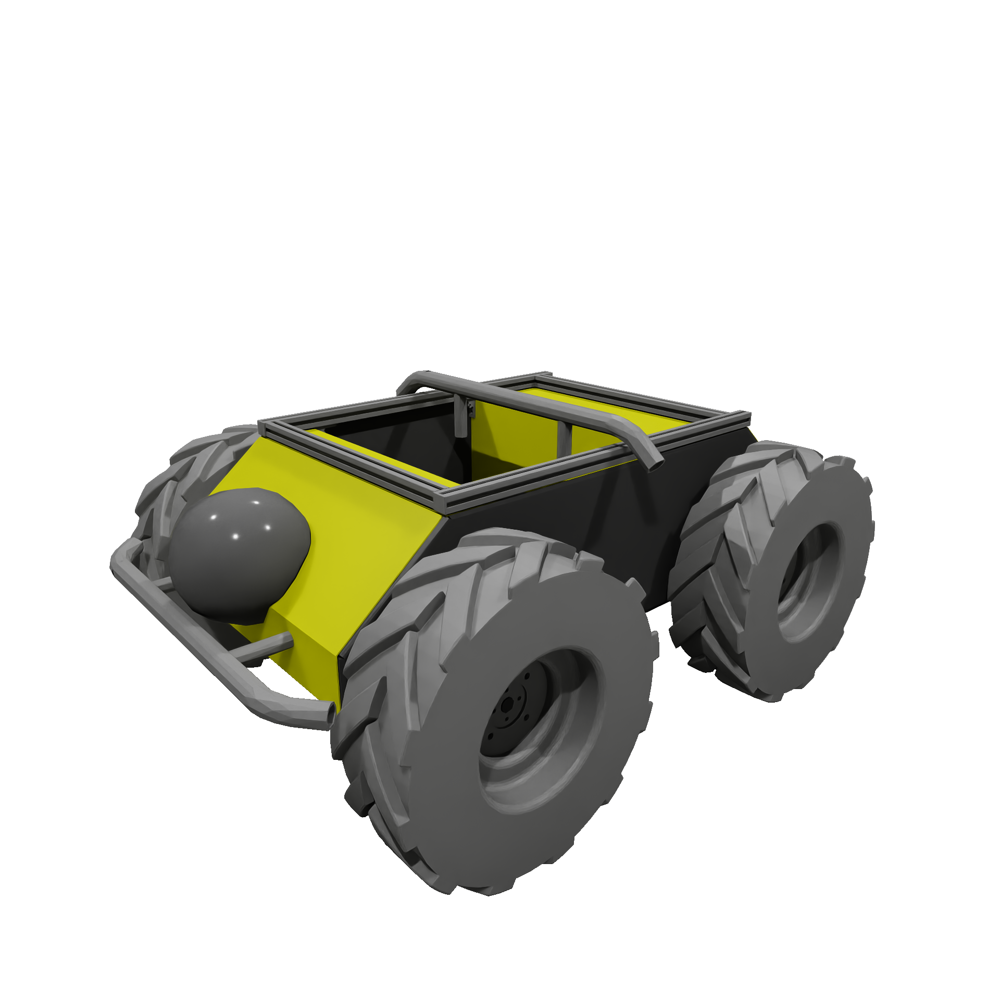 |
Clearpath Robotics | https://behavior.stanford.edu/omnigibson/robots.html | |
| Fetch Robotics Freight | 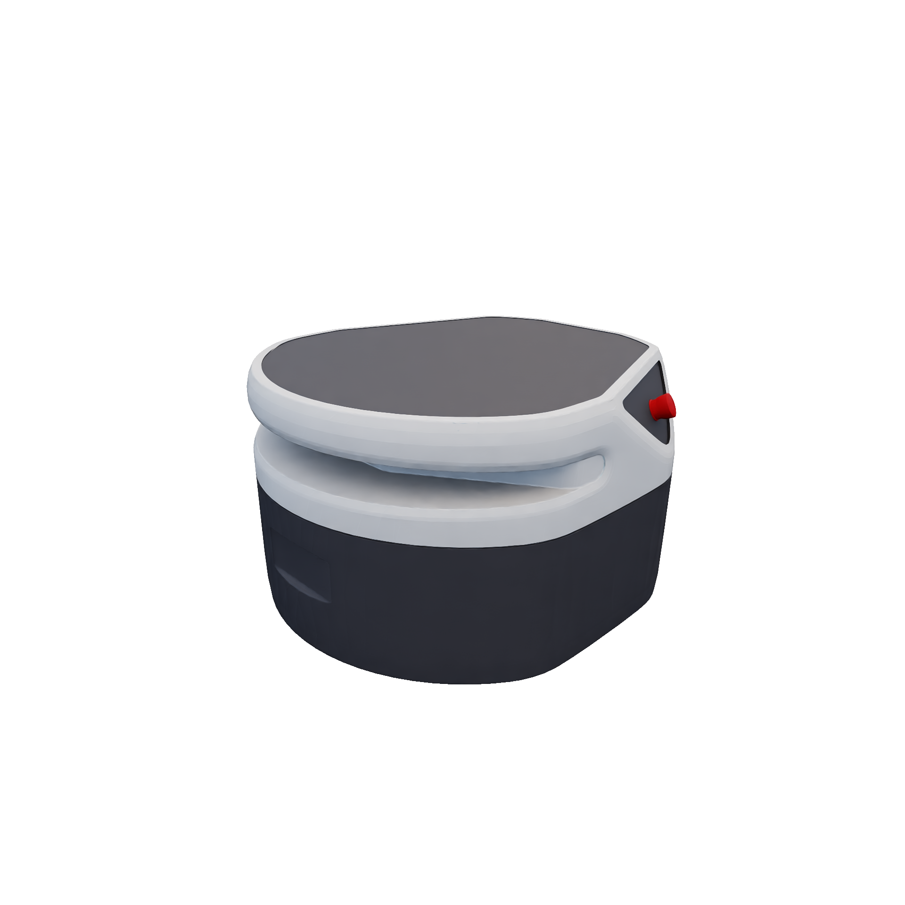 |
Fetch Robotics | https://behavior.stanford.edu/omnigibson/robots.html |
其中 LoCoBot 实物平台带有机械臂，但 BEHAVIOR / OmniGibson 文档明确说明其模型中的机械臂被禁用 并固定在底座上，因此本报告按官网运行配置把它归入纯轮式移动机器人。
无记录。
当前已核验的贡献者论文中，没有发现上述 4 种纯轮式移动机器人作为实验或数据采集平台的明确 型号证据，因此暂时无法给出论文使用频次排名。这里的“无记录”只表示论文核验结果为空， 不表示官网没有提及这些机器人。
此处统计论文实际使用的机械臂，包括集成在轮式机械臂机器人上的机械臂；它不同于上方网站清单中 “固定机械臂”这一平台类别。
| 排名 | 型号 | 记录数 | 贡献者数 | 论文数 |
|---|---|---|---|---|
| 1 | Galaxea R1 integrated arm (6-DoF) | 20 | 13 | 2 |
| 2 | PAL Robotics TIAGo integrated arm (7-DoF) | 12 | 12 | 1 |
| 排名 | 型号 | 记录数 | 贡献者数 | 论文数 |
|---|---|---|---|---|
| 1 | Galaxea R1 | 20 | 13 | 2 |
| 2 | PAL Robotics TIAGo (dual-arm configuration) | 12 | 12 | 1 |
当前第一名是 Galaxea R1，第二名是 PAL Robotics TIAGo（双臂配置）。该结论只适用于已经完成 型号证据核验的论文集合，不代表机器人学全部论文的市场占有率。
价格快照日期：2026-07-02。人民币换算采用 2026-07-01 的统一参考汇率（USD/CNY=6.7945， EUR/CNY=7.7342， JPY/CNY=0.04176）。人民币金额仅用于横向比较， 不包含来源未明确的税费、运费、关税、安装、软件许可或集成服务。
| 类别 | 具有公开数字新品参考的报价数 | 最低人民币参考 | 最高人民币参考 |
|---|---|---|---|
| 纯轮式移动机器人 | 3 | ¥29,012 | ¥208,823 |
| 固定机械臂 | 2 | ¥20,377 | ¥256,621 |
| 轮式机械臂机器人 | 3 | ¥203,495 | ¥475,608 |
这里的“新品参考”允许同系列当前代或后继配置，但价格表会明确标注匹配关系；历史价、 停产价和低置信第三方估值不进入上述范围。正式价格表不收录二手报价。
| BEHAVIOR型号 | 图片 | 销售型号或配置 | 匹配关系 | 价格性质 | 供应状态 | 原币价格 | 人民币参考 | 来源 | 可信度 | 价格链接 | 说明 |
|---|---|---|---|---|---|---|---|---|---|---|---|
| Franka Research 3 | 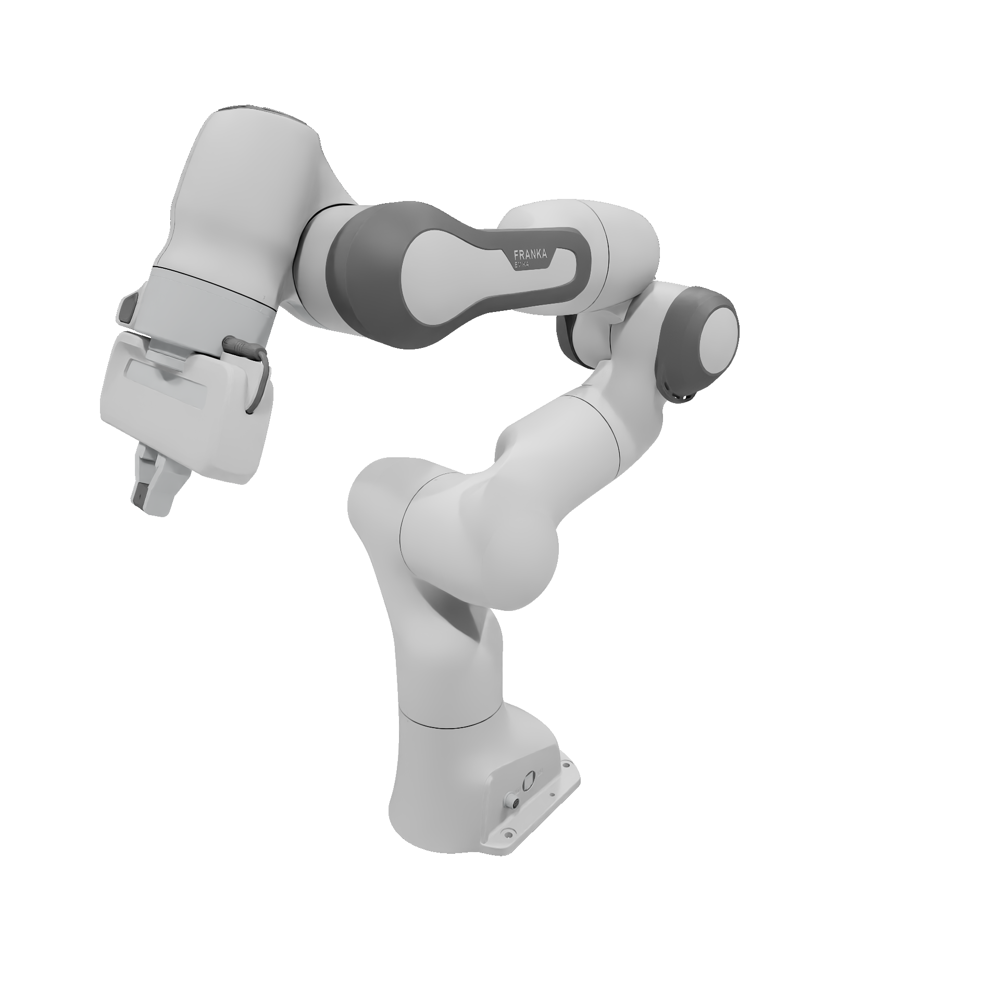 |
Franka Research 3 | exact | new | official enquiry | 询价 | Franka Robotics | high | https://franka.de/franka-research-3 | Official page provides a purchase/enquiry flow but no public numeric price. | |
| Franka Research 3 | Franka Research 3 with FCI licence | exact commercial configuration | new | order item; eight-week delivery shown | 起价 EUR 33,180.00 | 约 ¥256,621 | Generation Robots | medium | https://www.generationrobots.com/en/403992-7-axis-franka-research-3-robotic-arm-fci-licence.html | Public new-price reference for an exact FR3 system including controller and FCI; the gripper is listed separately. | |
| Trossen ViperX 300 6DOF | 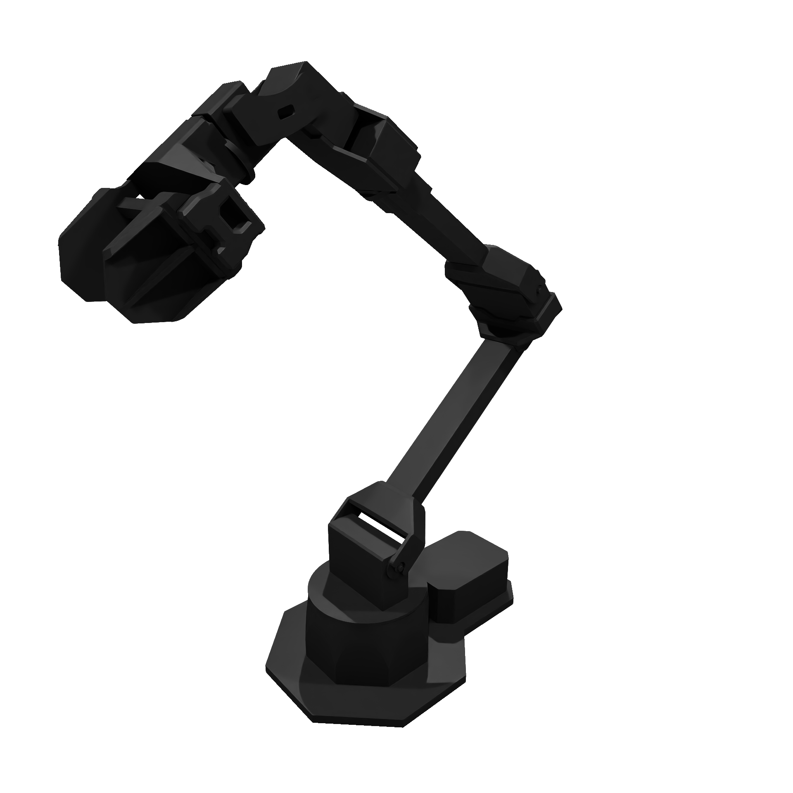 |
ViperX 300 S Robot Arm, legacy 6DOF | exact legacy configuration | last listed new price | discontinued / sold out | USD 6,742.95 | 约 ¥45,815 | Trossen Robotics | high | https://store.trossenrobotics.com/products/viperx-300-s-robot-arm | Official last-listed price for the discontinued legacy arm. |
| A1 | 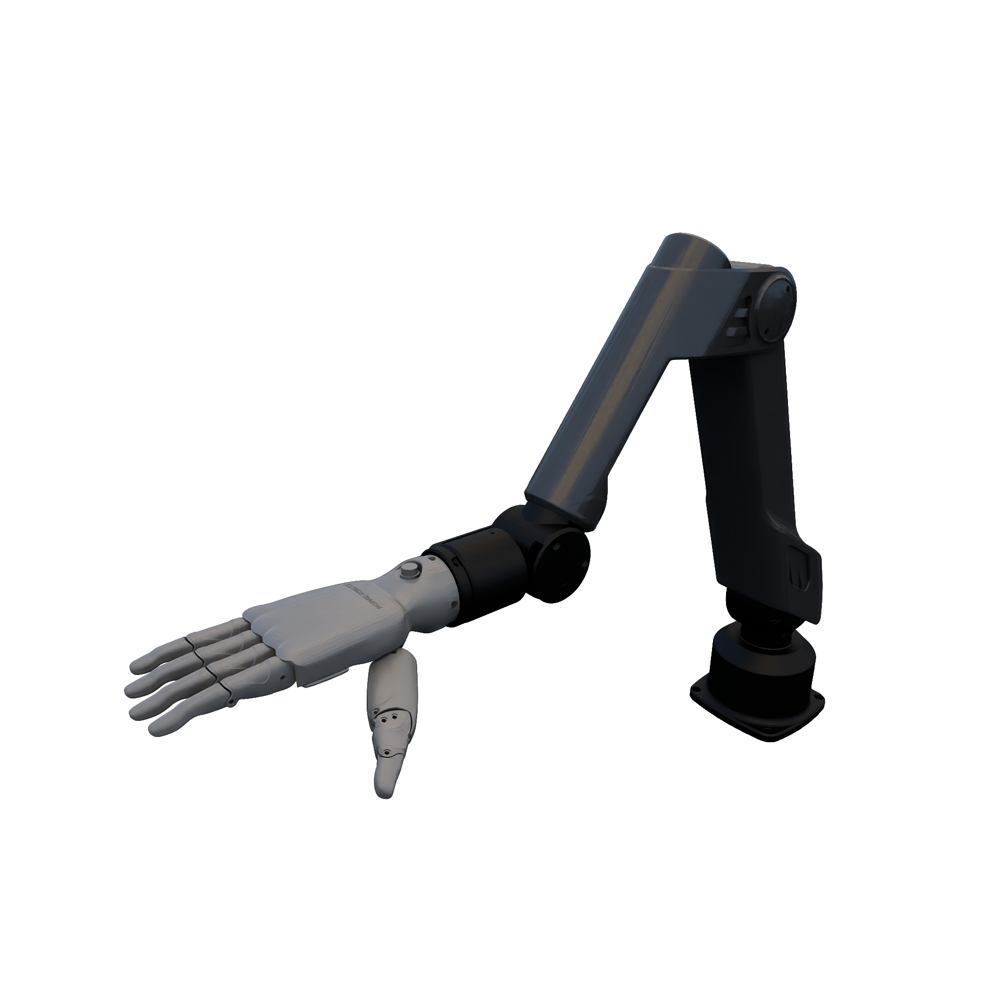 |
Galaxea A1 | exact | new | no public exact-model price | 询价 | Galaxea Dynamics | high | https://galaxea-dynamics.com/products/6-dof-ultra-light-robot-arm | The current official store sells A1Z, not the legacy A1; no public exact legacy A1 price was found. Do not confuse with Unitree A1, and do not assign the A1Z price to this model. | |
| A1 | Galaxea A1Z | successor/reference only | new | in official store | USD 2,999.00 | 约 ¥20,377 | Galaxea Dynamics | high | https://galaxea-dynamics.com/collections/frontpage | Reference price for current A1Z only; it is not presented as the price of the BEHAVIOR A1. | |
| Franka Research 3 mounted cart | 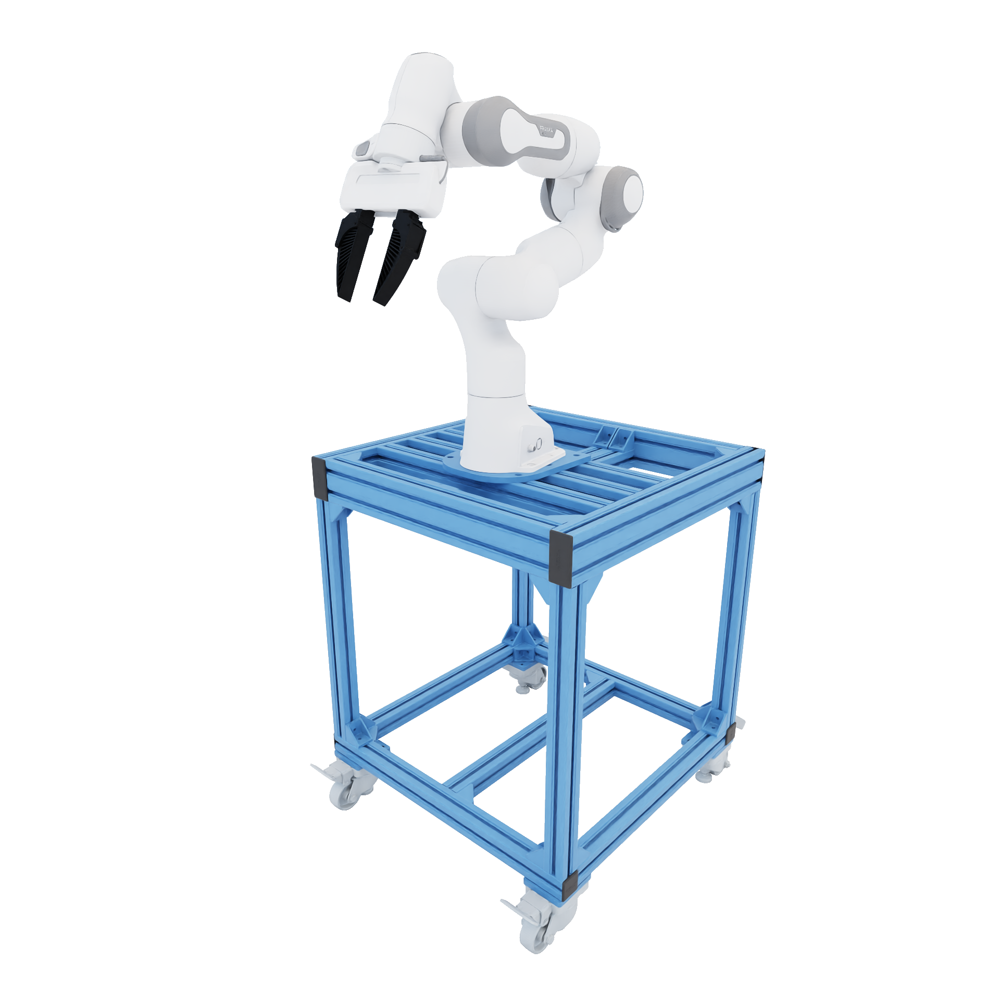 |
Franka Research 3 mounted on custom extrusion cart | custom BEHAVIOR configuration | new/custom | no complete commercial bundle | 无公开价格 | Franka Robotics | high | https://franka.de/franka-research-3 | The cart is a BEHAVIOR configuration, not a priced Franka product. No component prices are added together. |
| BEHAVIOR型号 | 图片 | 销售型号或配置 | 匹配关系 | 价格性质 | 供应状态 | 原币价格 | 人民币参考 | 来源 | 可信度 | 价格链接 | 说明 |
|---|---|---|---|---|---|---|---|---|---|---|---|
| Fetch | 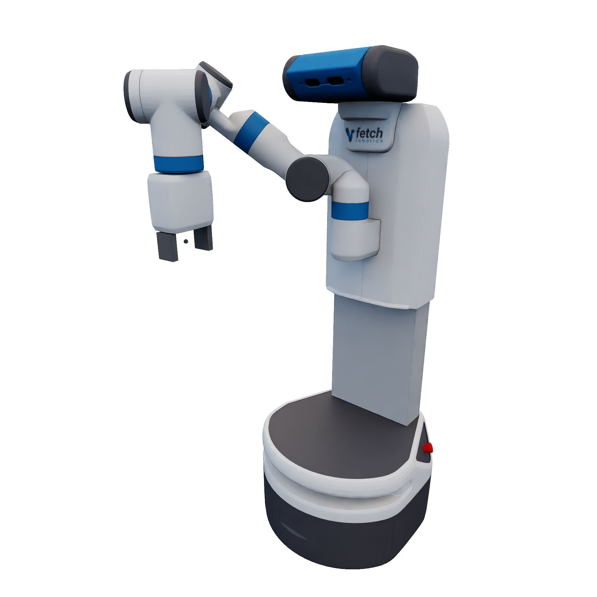 |
Fetch Mobile Manipulator | exact | historical new list price | legacy / no current new public offer | 起价 USD 100,000.00 | 约 ¥679,450 | ROBOTS Guide | medium | https://robotsguide.com/robots/fetch | Historical base price for the complete Fetch mobile manipulator; not a current quotation. |
| PAL Robotics TIAGo (dual-arm configuration) | 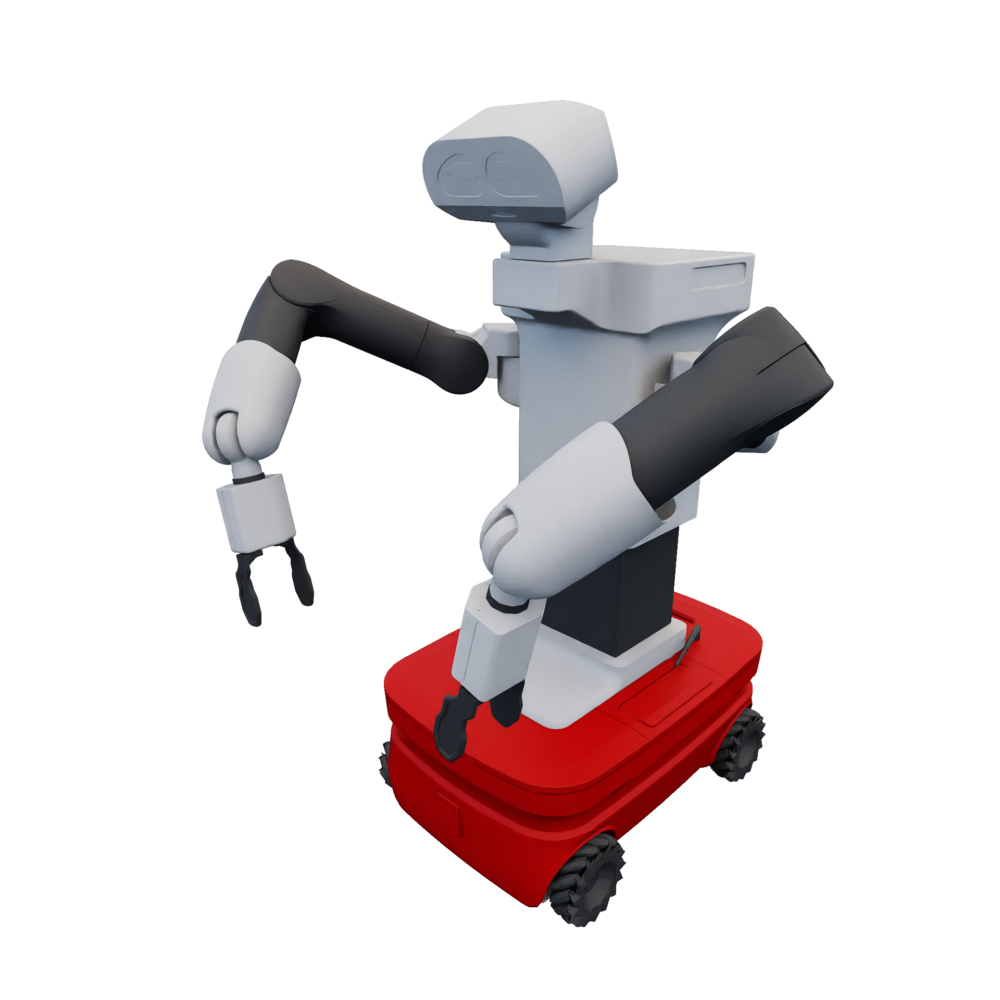 |
PAL Robotics TIAGo dual-arm configuration | exact configuration class | new | official request for quote | 询价 | PAL Robotics | high | https://pal-robotics.com/robot/tiago/ | TIAGo Head and single-arm prices are not substituted for the dual-arm configuration. | |
| PAL Robotics TIAGo (dual-arm configuration) | PAL Robotics TIAGo / TIAGo++ configurations | third-party indicative range | new estimate | commercially available | USD 30,000.00–100,000.00 | ¥203,835–¥679,450 | BotMarket24 | low | https://botmarket24.com/en/robot-database/pal-tiago/ | Indicative family range, not an official quote for the exact dual-arm configuration. | |
| Hello Robot Stretch | 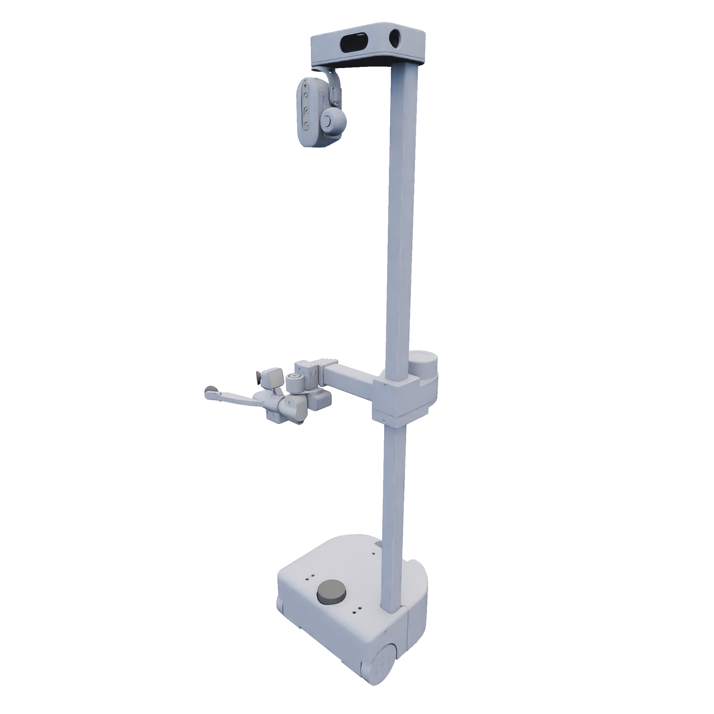 |
Hello Robot Stretch 3 | previous-generation historical reference | historical new list price | superseded by Stretch 4 | USD 24,950.00 | 约 ¥169,523 | ui44 | medium | https://ui44.com/robots/hello-robot-stretch-3 | Previous-generation Stretch 3 list-price reference; BEHAVIOR names the family generically as Stretch. |
| Hello Robot Stretch | Hello Robot Stretch 4 | current-generation reference | new | available; typically ships in 2–4 weeks | USD 29,950.00 | 约 ¥203,495 | Hello Robot | high | https://hello-robot.com/purchase/ | Current Stretch 4 price; it is a family successor reference, not proof that the BEHAVIOR asset is Stretch 4. | |
| Galaxea R1 | 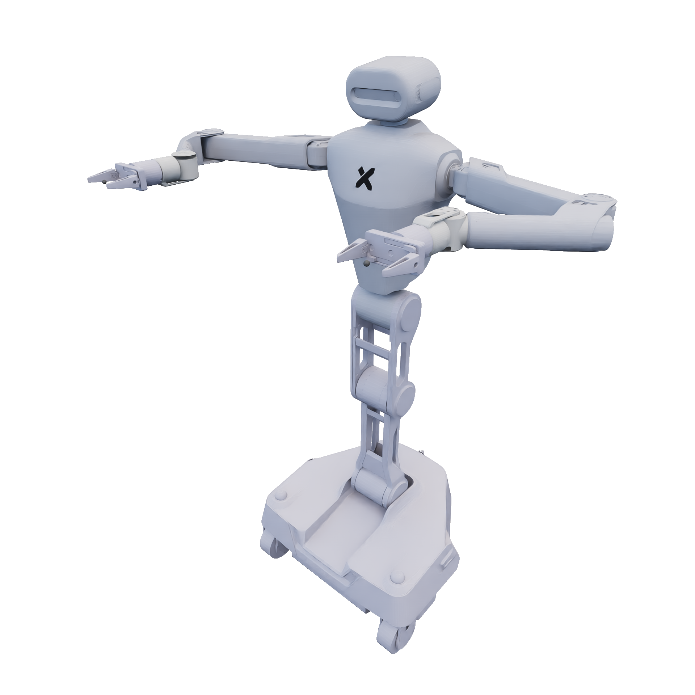 |
Galaxea R1 legacy 6-DOF-arm platform | exact legacy family | legacy | no current exact-model public price | 无公开价格 | Galaxea Dynamics | high | https://galaxea-dynamics.com/products/6-dof-general-mobile-manipulation-platform | The current official store sells R1 Lite 2026, not the legacy R1; no current exact-model public price was found. Do not confuse with Unitree R1, and treat R1 Lite only as a successor reference. | |
| Galaxea R1 | Galaxea R1 Lite 2026 | successor/reference only | new | in stock / order inquiry | USD 39,999.00 | 约 ¥271,773 | Galaxea Dynamics | high | https://galaxea-dynamics.com/products/6-dof-general-mobile-manipulation-platform | Current R1 Lite successor reference; not assigned as the legacy R1 exact price. | |
| Galaxea R1 Pro | 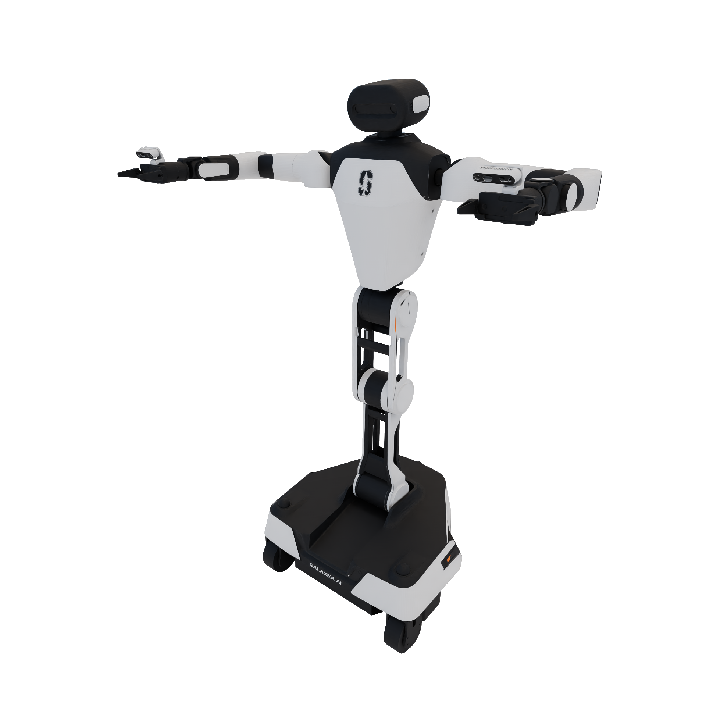 |
Galaxea R1 Pro 2026 | current exact family | new | in stock / order inquiry | USD 69,999.00 | 约 ¥475,608 | Galaxea Dynamics | high | https://galaxea-dynamics.com/products/galaxea-r1-pro-universal-humanoid-robot | Package includes base, two 7-DOF arms and two G1 grippers; optional cameras and dexterous hands are excluded. |
| BEHAVIOR型号 | 图片 | 销售型号或配置 | 匹配关系 | 价格性质 | 供应状态 | 原币价格 | 人民币参考 | 来源 | 可信度 | 价格链接 | 说明 |
|---|---|---|---|---|---|---|---|---|---|---|---|
| BehaviorRobot | 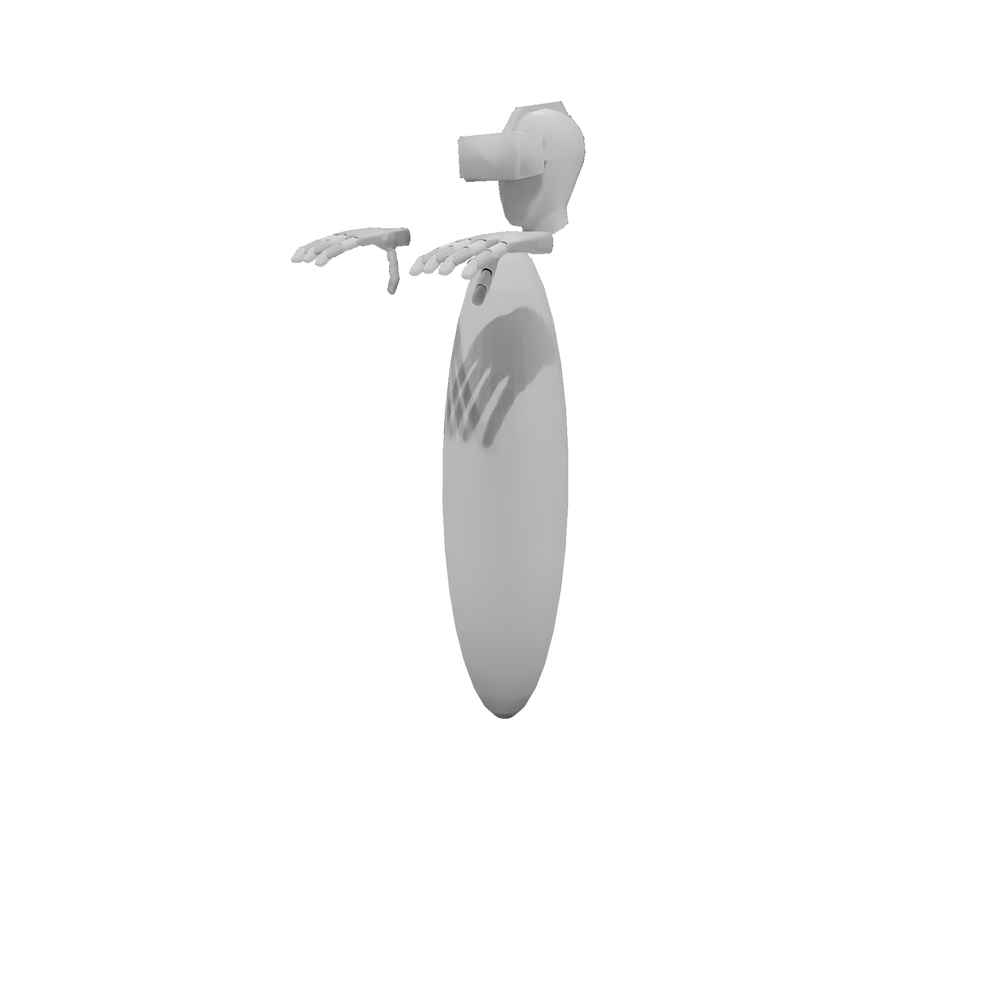 |
BehaviorRobot | exact virtual agent | not applicable | non-commercial software model | 非商品 | BEHAVIOR project | high | https://behavior.stanford.edu/omnigibson/robots.html | Virtual agent used for VR teleoperation; it is not a commercial physical robot. |
重要边界：
| group | count |
|---|---|
| Alumni | 31 |
| Core Team | 15 |
| Supporting Team | 11 |
| category | name | description | url |
|---|---|---|---|
| Benchmark | BEHAVIOR-1K | 1,000 long-horizon household activities instantiated in OmniGibson. | https://behavior.stanford.edu/ |
| Benchmark | BEHAVIOR-100 | Earlier 100-activity benchmark instantiated in iGibson 2.0. | https://behavior.stanford.edu/behavior_100/overview.html |
| Simulator | OmniGibson | Interactive simulation with rigid bodies, deformables, liquids, thermal effects and transitions. | https://behavior.stanford.edu/getting_started/quickstart.html |
| Task definitions | BDDL | Predicate-based household task definitions and activity logic. | https://behavior.stanford.edu/behavior_components/behavior_tasks.html |
| Knowledgebase | BEHAVIOR-1K Knowledgebase | Browse tasks, synsets, objects, categories, scenes, transitions and attachments. | https://behavior.stanford.edu/knowledgebase/ |
| 3D assets | Scenes | Interactive household and other scene assets. | https://behavior.stanford.edu/behavior_components/scenes.html |
| 3D assets | Objects | Thousands of annotated object assets and categories. | https://behavior.stanford.edu/behavior_components/objects.html |
| Robot software | Robot models and controllers | Robot embodiments, controller interfaces and sensor interfaces. | https://behavior.stanford.edu/omnigibson/robots.html |
| Data collection | Teleoperation | JoyLo and VR teleoperation plus task sampling and data collection documentation. | https://behavior.stanford.edu/behavior_components/joylo.html |
| Dataset | 2026 BEHAVIOR Challenge Dataset | Current challenge demonstration and evaluation data entry point. | https://behavior.stanford.edu/challenge/dataset.html |
| Evaluation | 2026 BEHAVIOR Challenge | Current rules, baselines, leaderboard, submission guide and demo gallery. | https://behavior.stanford.edu/challenge/ |
| Dataset | BEHAVIOR-100 VR Dataset | VR demonstrations associated with BEHAVIOR-100. | https://behavior.stanford.edu/behavior_100/dataset.html |
| Toolkit | BEHAVIOR Vision Suite | Controllable synthetic visual data generation using BEHAVIOR assets. | https://behavior-vision-suite.github.io/ |
| Research | Related Research | Official index of BEHAVIOR-related projects and the Gibson simulation series. | https://behavior.stanford.edu/other/related_research.html |
| Code | BEHAVIOR-1K GitHub | Official source code repository. | https://github.com/StanfordVL/BEHAVIOR-1K |
Challenge 年份已分别从首页和落地页提取，两处当前均为 2026 BEHAVIOR Challenge。
官网机器人文档正文称支持 12 种机器人，但页面当前实际呈现 14 个条目。本表按页面条目记录， 并保留 Franka Mounted 等配置变体；这类变体不会被悄悄合并成另一型号。
| person | contributor_group | homepage | paper | year | paper_url | project_url | doi | arxiv_id | model_raw | model_canonical | entity_type | robot_type | arm_model | end_effector | usage_context | world | evidence | evidence_url | evidence_location | verification_status |
|---|---|---|---|---|---|---|---|---|---|---|---|---|---|---|---|---|---|---|---|---|
| Chengshu Li | Core Team | http://chengshuli.me | MoMaGen: Generating Demonstrations under Soft and Hard Constraints for Multi-Step Bimanual Mobile Manipulation | 2025 | https://arxiv.org/abs/2510.18316 | https://momagen.github.io/ | 2510.18316 | Galaxea R1 | Galaxea R1 | robot | bimanual mobile manipulator | Galaxea R1 integrated arm (6-DoF) | parallel-jaw gripper | 采集源演示并生成训练数据 | real and simulation | Project page says source demonstrations are collected on a Galaxea R1. | https://momagen.github.io/ | official project page | verified | |
| Chengshu Li | Core Team | http://chengshuli.me | MoMaGen: Generating Demonstrations under Soft and Hard Constraints for Multi-Step Bimanual Mobile Manipulation | 2025 | https://arxiv.org/abs/2510.18316 | https://momagen.github.io/ | 2510.18316 | PAL Robotics TIAGo (dual-arm configuration) | PAL Robotics TIAGo (dual-arm configuration) | robot | bimanual mobile manipulator | PAL Robotics TIAGo integrated arm (7-DoF) | parallel-jaw gripper | 跨本体轨迹生成 | simulation | Project page says R1 demonstrations are converted into trajectories for a TIAGo robot. | https://momagen.github.io/ | official project page | verified | |
| Arpit Bahety | Alumni | https://arpitrf.github.io/ | MoMaGen: Generating Demonstrations under Soft and Hard Constraints for Multi-Step Bimanual Mobile Manipulation | 2025 | https://arxiv.org/abs/2510.18316 | https://momagen.github.io/ | 2510.18316 | Galaxea R1 | Galaxea R1 | robot | bimanual mobile manipulator | Galaxea R1 integrated arm (6-DoF) | parallel-jaw gripper | 采集源演示并生成训练数据 | real and simulation | Project page says source demonstrations are collected on a Galaxea R1. | https://momagen.github.io/ | official project page | verified | |
| Arpit Bahety | Alumni | https://arpitrf.github.io/ | MoMaGen: Generating Demonstrations under Soft and Hard Constraints for Multi-Step Bimanual Mobile Manipulation | 2025 | https://arxiv.org/abs/2510.18316 | https://momagen.github.io/ | 2510.18316 | PAL Robotics TIAGo (dual-arm configuration) | PAL Robotics TIAGo (dual-arm configuration) | robot | bimanual mobile manipulator | PAL Robotics TIAGo integrated arm (7-DoF) | parallel-jaw gripper | 跨本体轨迹生成 | simulation | Project page says R1 demonstrations are converted into trajectories for a TIAGo robot. | https://momagen.github.io/ | official project page | verified | |
| Hang Yin | Core Team | https://hang-yin.github.io | MoMaGen: Generating Demonstrations under Soft and Hard Constraints for Multi-Step Bimanual Mobile Manipulation | 2025 | https://arxiv.org/abs/2510.18316 | https://momagen.github.io/ | 2510.18316 | Galaxea R1 | Galaxea R1 | robot | bimanual mobile manipulator | Galaxea R1 integrated arm (6-DoF) | parallel-jaw gripper | 采集源演示并生成训练数据 | real and simulation | Project page says source demonstrations are collected on a Galaxea R1. | https://momagen.github.io/ | official project page | verified | |
| Hang Yin | Core Team | https://hang-yin.github.io | MoMaGen: Generating Demonstrations under Soft and Hard Constraints for Multi-Step Bimanual Mobile Manipulation | 2025 | https://arxiv.org/abs/2510.18316 | https://momagen.github.io/ | 2510.18316 | PAL Robotics TIAGo (dual-arm configuration) | PAL Robotics TIAGo (dual-arm configuration) | robot | bimanual mobile manipulator | PAL Robotics TIAGo integrated arm (7-DoF) | parallel-jaw gripper | 跨本体轨迹生成 | simulation | Project page says R1 demonstrations are converted into trajectories for a TIAGo robot. | https://momagen.github.io/ | official project page | verified | |
| Yunfan Jiang | Supporting Team | https://yunfanj.com/ | MoMaGen: Generating Demonstrations under Soft and Hard Constraints for Multi-Step Bimanual Mobile Manipulation | 2025 | https://arxiv.org/abs/2510.18316 | https://momagen.github.io/ | 2510.18316 | Galaxea R1 | Galaxea R1 | robot | bimanual mobile manipulator | Galaxea R1 integrated arm (6-DoF) | parallel-jaw gripper | 采集源演示并生成训练数据 | real and simulation | Project page says source demonstrations are collected on a Galaxea R1. | https://momagen.github.io/ | official project page | verified | |
| Yunfan Jiang | Supporting Team | https://yunfanj.com/ | MoMaGen: Generating Demonstrations under Soft and Hard Constraints for Multi-Step Bimanual Mobile Manipulation | 2025 | https://arxiv.org/abs/2510.18316 | https://momagen.github.io/ | 2510.18316 | PAL Robotics TIAGo (dual-arm configuration) | PAL Robotics TIAGo (dual-arm configuration) | robot | bimanual mobile manipulator | PAL Robotics TIAGo integrated arm (7-DoF) | parallel-jaw gripper | 跨本体轨迹生成 | simulation | Project page says R1 demonstrations are converted into trajectories for a TIAGo robot. | https://momagen.github.io/ | official project page | verified | |
| Josiah Wong | Core Team | http://jowo.me | MoMaGen: Generating Demonstrations under Soft and Hard Constraints for Multi-Step Bimanual Mobile Manipulation | 2025 | https://arxiv.org/abs/2510.18316 | https://momagen.github.io/ | 2510.18316 | Galaxea R1 | Galaxea R1 | robot | bimanual mobile manipulator | Galaxea R1 integrated arm (6-DoF) | parallel-jaw gripper | 采集源演示并生成训练数据 | real and simulation | Project page says source demonstrations are collected on a Galaxea R1. | https://momagen.github.io/ | official project page | verified | |
| Josiah Wong | Core Team | http://jowo.me | MoMaGen: Generating Demonstrations under Soft and Hard Constraints for Multi-Step Bimanual Mobile Manipulation | 2025 | https://arxiv.org/abs/2510.18316 | https://momagen.github.io/ | 2510.18316 | PAL Robotics TIAGo (dual-arm configuration) | PAL Robotics TIAGo (dual-arm configuration) | robot | bimanual mobile manipulator | PAL Robotics TIAGo integrated arm (7-DoF) | parallel-jaw gripper | 跨本体轨迹生成 | simulation | Project page says R1 demonstrations are converted into trajectories for a TIAGo robot. | https://momagen.github.io/ | official project page | verified | |
| Sujay Garlanka | Alumni | https://sujaygarlanka.com/ | MoMaGen: Generating Demonstrations under Soft and Hard Constraints for Multi-Step Bimanual Mobile Manipulation | 2025 | https://arxiv.org/abs/2510.18316 | https://momagen.github.io/ | 2510.18316 | Galaxea R1 | Galaxea R1 | robot | bimanual mobile manipulator | Galaxea R1 integrated arm (6-DoF) | parallel-jaw gripper | 采集源演示并生成训练数据 | real and simulation | Project page says source demonstrations are collected on a Galaxea R1. | https://momagen.github.io/ | official project page | verified | |
| Sujay Garlanka | Alumni | https://sujaygarlanka.com/ | MoMaGen: Generating Demonstrations under Soft and Hard Constraints for Multi-Step Bimanual Mobile Manipulation | 2025 | https://arxiv.org/abs/2510.18316 | https://momagen.github.io/ | 2510.18316 | PAL Robotics TIAGo (dual-arm configuration) | PAL Robotics TIAGo (dual-arm configuration) | robot | bimanual mobile manipulator | PAL Robotics TIAGo integrated arm (7-DoF) | parallel-jaw gripper | 跨本体轨迹生成 | simulation | Project page says R1 demonstrations are converted into trajectories for a TIAGo robot. | https://momagen.github.io/ | official project page | verified | |
| Cem Gokmen | Core Team | https://www.cemgokmen.com/ | MoMaGen: Generating Demonstrations under Soft and Hard Constraints for Multi-Step Bimanual Mobile Manipulation | 2025 | https://arxiv.org/abs/2510.18316 | https://momagen.github.io/ | 2510.18316 | Galaxea R1 | Galaxea R1 | robot | bimanual mobile manipulator | Galaxea R1 integrated arm (6-DoF) | parallel-jaw gripper | 采集源演示并生成训练数据 | real and simulation | Project page says source demonstrations are collected on a Galaxea R1. | https://momagen.github.io/ | official project page | verified | |
| Cem Gokmen | Core Team | https://www.cemgokmen.com/ | MoMaGen: Generating Demonstrations under Soft and Hard Constraints for Multi-Step Bimanual Mobile Manipulation | 2025 | https://arxiv.org/abs/2510.18316 | https://momagen.github.io/ | 2510.18316 | PAL Robotics TIAGo (dual-arm configuration) | PAL Robotics TIAGo (dual-arm configuration) | robot | bimanual mobile manipulator | PAL Robotics TIAGo integrated arm (7-DoF) | parallel-jaw gripper | 跨本体轨迹生成 | simulation | Project page says R1 demonstrations are converted into trajectories for a TIAGo robot. | https://momagen.github.io/ | official project page | verified | |
| Ruohan Zhang | Core Team | https://ai.stanford.edu/~zharu/ | MoMaGen: Generating Demonstrations under Soft and Hard Constraints for Multi-Step Bimanual Mobile Manipulation | 2025 | https://arxiv.org/abs/2510.18316 | https://momagen.github.io/ | 2510.18316 | Galaxea R1 | Galaxea R1 | robot | bimanual mobile manipulator | Galaxea R1 integrated arm (6-DoF) | parallel-jaw gripper | 采集源演示并生成训练数据 | real and simulation | Project page says source demonstrations are collected on a Galaxea R1. | https://momagen.github.io/ | official project page | verified | |
| Ruohan Zhang | Core Team | https://ai.stanford.edu/~zharu/ | MoMaGen: Generating Demonstrations under Soft and Hard Constraints for Multi-Step Bimanual Mobile Manipulation | 2025 | https://arxiv.org/abs/2510.18316 | https://momagen.github.io/ | 2510.18316 | PAL Robotics TIAGo (dual-arm configuration) | PAL Robotics TIAGo (dual-arm configuration) | robot | bimanual mobile manipulator | PAL Robotics TIAGo integrated arm (7-DoF) | parallel-jaw gripper | 跨本体轨迹生成 | simulation | Project page says R1 demonstrations are converted into trajectories for a TIAGo robot. | https://momagen.github.io/ | official project page | verified | |
| Weiyu Liu | Supporting Team | https://www.weiyuliu.com/ | MoMaGen: Generating Demonstrations under Soft and Hard Constraints for Multi-Step Bimanual Mobile Manipulation | 2025 | https://arxiv.org/abs/2510.18316 | https://momagen.github.io/ | 2510.18316 | Galaxea R1 | Galaxea R1 | robot | bimanual mobile manipulator | Galaxea R1 integrated arm (6-DoF) | parallel-jaw gripper | 采集源演示并生成训练数据 | real and simulation | Project page says source demonstrations are collected on a Galaxea R1. | https://momagen.github.io/ | official project page | verified | |
| Weiyu Liu | Supporting Team | https://www.weiyuliu.com/ | MoMaGen: Generating Demonstrations under Soft and Hard Constraints for Multi-Step Bimanual Mobile Manipulation | 2025 | https://arxiv.org/abs/2510.18316 | https://momagen.github.io/ | 2510.18316 | PAL Robotics TIAGo (dual-arm configuration) | PAL Robotics TIAGo (dual-arm configuration) | robot | bimanual mobile manipulator | PAL Robotics TIAGo integrated arm (7-DoF) | parallel-jaw gripper | 跨本体轨迹生成 | simulation | Project page says R1 demonstrations are converted into trajectories for a TIAGo robot. | https://momagen.github.io/ | official project page | verified | |
| Jiajun Wu | Core Team | https://jiajunwu.com/ | MoMaGen: Generating Demonstrations under Soft and Hard Constraints for Multi-Step Bimanual Mobile Manipulation | 2025 | https://arxiv.org/abs/2510.18316 | https://momagen.github.io/ | 2510.18316 | Galaxea R1 | Galaxea R1 | robot | bimanual mobile manipulator | Galaxea R1 integrated arm (6-DoF) | parallel-jaw gripper | 采集源演示并生成训练数据 | real and simulation | Project page says source demonstrations are collected on a Galaxea R1. | https://momagen.github.io/ | official project page | verified | |
| Jiajun Wu | Core Team | https://jiajunwu.com/ | MoMaGen: Generating Demonstrations under Soft and Hard Constraints for Multi-Step Bimanual Mobile Manipulation | 2025 | https://arxiv.org/abs/2510.18316 | https://momagen.github.io/ | 2510.18316 | PAL Robotics TIAGo (dual-arm configuration) | PAL Robotics TIAGo (dual-arm configuration) | robot | bimanual mobile manipulator | PAL Robotics TIAGo integrated arm (7-DoF) | parallel-jaw gripper | 跨本体轨迹生成 | simulation | Project page says R1 demonstrations are converted into trajectories for a TIAGo robot. | https://momagen.github.io/ | official project page | verified | |
| Roberto Martín-Martín | Supporting Team | https://robertomartinmartin.com/ | MoMaGen: Generating Demonstrations under Soft and Hard Constraints for Multi-Step Bimanual Mobile Manipulation | 2025 | https://arxiv.org/abs/2510.18316 | https://momagen.github.io/ | 2510.18316 | Galaxea R1 | Galaxea R1 | robot | bimanual mobile manipulator | Galaxea R1 integrated arm (6-DoF) | parallel-jaw gripper | 采集源演示并生成训练数据 | real and simulation | Project page says source demonstrations are collected on a Galaxea R1. | https://momagen.github.io/ | official project page | verified | |
| Roberto Martín-Martín | Supporting Team | https://robertomartinmartin.com/ | MoMaGen: Generating Demonstrations under Soft and Hard Constraints for Multi-Step Bimanual Mobile Manipulation | 2025 | https://arxiv.org/abs/2510.18316 | https://momagen.github.io/ | 2510.18316 | PAL Robotics TIAGo (dual-arm configuration) | PAL Robotics TIAGo (dual-arm configuration) | robot | bimanual mobile manipulator | PAL Robotics TIAGo integrated arm (7-DoF) | parallel-jaw gripper | 跨本体轨迹生成 | simulation | Project page says R1 demonstrations are converted into trajectories for a TIAGo robot. | https://momagen.github.io/ | official project page | verified | |
| Li Fei-Fei | Core Team | https://engineering.stanford.edu/people/fei-fei-li | MoMaGen: Generating Demonstrations under Soft and Hard Constraints for Multi-Step Bimanual Mobile Manipulation | 2025 | https://arxiv.org/abs/2510.18316 | https://momagen.github.io/ | 2510.18316 | Galaxea R1 | Galaxea R1 | robot | bimanual mobile manipulator | Galaxea R1 integrated arm (6-DoF) | parallel-jaw gripper | 采集源演示并生成训练数据 | real and simulation | Project page says source demonstrations are collected on a Galaxea R1. | https://momagen.github.io/ | official project page | verified | |
| Li Fei-Fei | Core Team | https://engineering.stanford.edu/people/fei-fei-li | MoMaGen: Generating Demonstrations under Soft and Hard Constraints for Multi-Step Bimanual Mobile Manipulation | 2025 | https://arxiv.org/abs/2510.18316 | https://momagen.github.io/ | 2510.18316 | PAL Robotics TIAGo (dual-arm configuration) | PAL Robotics TIAGo (dual-arm configuration) | robot | bimanual mobile manipulator | PAL Robotics TIAGo integrated arm (7-DoF) | parallel-jaw gripper | 跨本体轨迹生成 | simulation | Project page says R1 demonstrations are converted into trajectories for a TIAGo robot. | https://momagen.github.io/ | official project page | verified | |
| Yunfan Jiang | Supporting Team | https://yunfanj.com/ | BEHAVIOR Robot Suite: Streamlining Real-World Whole-Body Manipulation for Everyday Household Activities | 2025 | https://arxiv.org/abs/2503.05652 | https://behavior-robot-suite.github.io/ | 2503.05652 | Galaxea R1 | Galaxea R1 | robot | bimanual mobile manipulator | Galaxea R1 integrated arm (6-DoF) | parallel-jaw gripper | 真实家庭任务、数据采集与策略评测 | real world and simulation ablation | Paper Section II-A explicitly selects the Galaxea R1 platform. | https://behavior-robot-suite.github.io/ | official project page | verified | |
| Ruohan Zhang | Core Team | https://ai.stanford.edu/~zharu/ | BEHAVIOR Robot Suite: Streamlining Real-World Whole-Body Manipulation for Everyday Household Activities | 2025 | https://arxiv.org/abs/2503.05652 | https://behavior-robot-suite.github.io/ | 2503.05652 | Galaxea R1 | Galaxea R1 | robot | bimanual mobile manipulator | Galaxea R1 integrated arm (6-DoF) | parallel-jaw gripper | 真实家庭任务、数据采集与策略评测 | real world and simulation ablation | Paper Section II-A explicitly selects the Galaxea R1 platform. | https://behavior-robot-suite.github.io/ | official project page | verified | |
| Josiah Wong | Core Team | http://jowo.me | BEHAVIOR Robot Suite: Streamlining Real-World Whole-Body Manipulation for Everyday Household Activities | 2025 | https://arxiv.org/abs/2503.05652 | https://behavior-robot-suite.github.io/ | 2503.05652 | Galaxea R1 | Galaxea R1 | robot | bimanual mobile manipulator | Galaxea R1 integrated arm (6-DoF) | parallel-jaw gripper | 真实家庭任务、数据采集与策略评测 | real world and simulation ablation | Paper Section II-A explicitly selects the Galaxea R1 platform. | https://behavior-robot-suite.github.io/ | official project page | verified | |
| Chen Wang | Alumni | https://www.chenwangjeremy.net/ | BEHAVIOR Robot Suite: Streamlining Real-World Whole-Body Manipulation for Everyday Household Activities | 2025 | https://arxiv.org/abs/2503.05652 | https://behavior-robot-suite.github.io/ | 2503.05652 | Galaxea R1 | Galaxea R1 | robot | bimanual mobile manipulator | Galaxea R1 integrated arm (6-DoF) | parallel-jaw gripper | 真实家庭任务、数据采集与策略评测 | real world and simulation ablation | Paper Section II-A explicitly selects the Galaxea R1 platform. | https://behavior-robot-suite.github.io/ | official project page | verified | |
| Hang Yin | Core Team | https://hang-yin.github.io | BEHAVIOR Robot Suite: Streamlining Real-World Whole-Body Manipulation for Everyday Household Activities | 2025 | https://arxiv.org/abs/2503.05652 | https://behavior-robot-suite.github.io/ | 2503.05652 | Galaxea R1 | Galaxea R1 | robot | bimanual mobile manipulator | Galaxea R1 integrated arm (6-DoF) | parallel-jaw gripper | 真实家庭任务、数据采集与策略评测 | real world and simulation ablation | Paper Section II-A explicitly selects the Galaxea R1 platform. | https://behavior-robot-suite.github.io/ | official project page | verified | |
| Cem Gokmen | Core Team | https://www.cemgokmen.com/ | BEHAVIOR Robot Suite: Streamlining Real-World Whole-Body Manipulation for Everyday Household Activities | 2025 | https://arxiv.org/abs/2503.05652 | https://behavior-robot-suite.github.io/ | 2503.05652 | Galaxea R1 | Galaxea R1 | robot | bimanual mobile manipulator | Galaxea R1 integrated arm (6-DoF) | parallel-jaw gripper | 真实家庭任务、数据采集与策略评测 | real world and simulation ablation | Paper Section II-A explicitly selects the Galaxea R1 platform. | https://behavior-robot-suite.github.io/ | official project page | verified | |
| Jiajun Wu | Core Team | https://jiajunwu.com/ | BEHAVIOR Robot Suite: Streamlining Real-World Whole-Body Manipulation for Everyday Household Activities | 2025 | https://arxiv.org/abs/2503.05652 | https://behavior-robot-suite.github.io/ | 2503.05652 | Galaxea R1 | Galaxea R1 | robot | bimanual mobile manipulator | Galaxea R1 integrated arm (6-DoF) | parallel-jaw gripper | 真实家庭任务、数据采集与策略评测 | real world and simulation ablation | Paper Section II-A explicitly selects the Galaxea R1 platform. | https://behavior-robot-suite.github.io/ | official project page | verified | |
| Li Fei-Fei | Core Team | https://engineering.stanford.edu/people/fei-fei-li | BEHAVIOR Robot Suite: Streamlining Real-World Whole-Body Manipulation for Everyday Household Activities | 2025 | https://arxiv.org/abs/2503.05652 | https://behavior-robot-suite.github.io/ | 2503.05652 | Galaxea R1 | Galaxea R1 | robot | bimanual mobile manipulator | Galaxea R1 integrated arm (6-DoF) | parallel-jaw gripper | 真实家庭任务、数据采集与策略评测 | real world and simulation ablation | Paper Section II-A explicitly selects the Galaxea R1 platform. | https://behavior-robot-suite.github.io/ | official project page | verified |
| entity_type | model | record_count | unique_people | unique_papers | rank_within_type |
|---|---|---|---|---|---|
| robot | Galaxea R1 | 20 | 13 | 2 | 1 |
| robot | PAL Robotics TIAGo (dual-arm configuration) | 12 | 12 | 1 | 2 |
| arm | Galaxea R1 integrated arm (6-DoF) | 20 | 13 | 2 | 1 |
| arm | PAL Robotics TIAGo integrated arm (7-DoF) | 12 | 12 | 1 | 2 |
| end_effector | parallel-jaw gripper | 32 | 13 | 2 | 1 |
record_count 是贡献者—论文—型号记录数；unique_people 和 unique_papers
分别是去重人数与论文数。榜单只使用 verification_status=verified 的明确型号。
| person | contributor_group | homepage | paper | year | paper_url | doi | arxiv_id | verification_status | model_note |
|---|---|---|---|---|---|---|---|---|---|
| Roger Dai | Alumni | https://rogerdai1217.github.io/ | Automated Creation of Digital Cousins for Robust Policy Learning | 2024 | https://arxiv.org/abs/2410.07408 | 2410.07408 | partial | The searchable paper and official project page describe robot-policy experiments but do not explicitly name the physical robot model; no model is inferred from images. | |
| Josiah Wong | Core Team | http://jowo.me | Automated Creation of Digital Cousins for Robust Policy Learning | 2024 | https://arxiv.org/abs/2410.07408 | 2410.07408 | partial | The searchable paper and official project page describe robot-policy experiments but do not explicitly name the physical robot model; no model is inferred from images. | |
| Yunfan Jiang | Supporting Team | https://yunfanj.com/ | Automated Creation of Digital Cousins for Robust Policy Learning | 2024 | https://arxiv.org/abs/2410.07408 | 2410.07408 | partial | The searchable paper and official project page describe robot-policy experiments but do not explicitly name the physical robot model; no model is inferred from images. | |
| Chen Wang | Alumni | https://www.chenwangjeremy.net/ | Automated Creation of Digital Cousins for Robust Policy Learning | 2024 | https://arxiv.org/abs/2410.07408 | 2410.07408 | partial | The searchable paper and official project page describe robot-policy experiments but do not explicitly name the physical robot model; no model is inferred from images. | |
| Cem Gokmen | Core Team | https://www.cemgokmen.com/ | Automated Creation of Digital Cousins for Robust Policy Learning | 2024 | https://arxiv.org/abs/2410.07408 | 2410.07408 | partial | The searchable paper and official project page describe robot-policy experiments but do not explicitly name the physical robot model; no model is inferred from images. | |
| Ruohan Zhang | Core Team | https://ai.stanford.edu/~zharu/ | Automated Creation of Digital Cousins for Robust Policy Learning | 2024 | https://arxiv.org/abs/2410.07408 | 2410.07408 | partial | The searchable paper and official project page describe robot-policy experiments but do not explicitly name the physical robot model; no model is inferred from images. | |
| Jiajun Wu | Core Team | https://jiajunwu.com/ | Automated Creation of Digital Cousins for Robust Policy Learning | 2024 | https://arxiv.org/abs/2410.07408 | 2410.07408 | partial | The searchable paper and official project page describe robot-policy experiments but do not explicitly name the physical robot model; no model is inferred from images. | |
| Li Fei-Fei | Core Team | https://engineering.stanford.edu/people/fei-fei-li | Automated Creation of Digital Cousins for Robust Policy Learning | 2024 | https://arxiv.org/abs/2410.07408 | 2410.07408 | partial | The searchable paper and official project page describe robot-policy experiments but do not explicitly name the physical robot model; no model is inferred from images. |
公共学术索引共保留 70 条“贡献者—候选论文”记录。为避免把题目或摘要中的
robot 关键词误当作实验平台，这些记录不进入 List 3 和型号排名。完整清单见
paper_candidates.csv。
python -m scripts.collect_research --discover-crossref 更新官网名册和无密钥候选；
有 OpenAlex API key 或匿名服务恢复后可追加 --discover-openalex。data/catalog.json。python scripts/build_catalog.py 重新生成三张主表、未决表、统计表和本报告。python -m pytest 验证解析、时间过滤、别名归一化、去重和统计。{kind=link}
{kind=link}
{kind=link}
{kind=link}
{kind=link}
{kind=link}
{kind=link}
{kind=link}
{kind=link}
{kind=link}
{kind=link}
{kind=link}
{kind=link}
{kind=link}